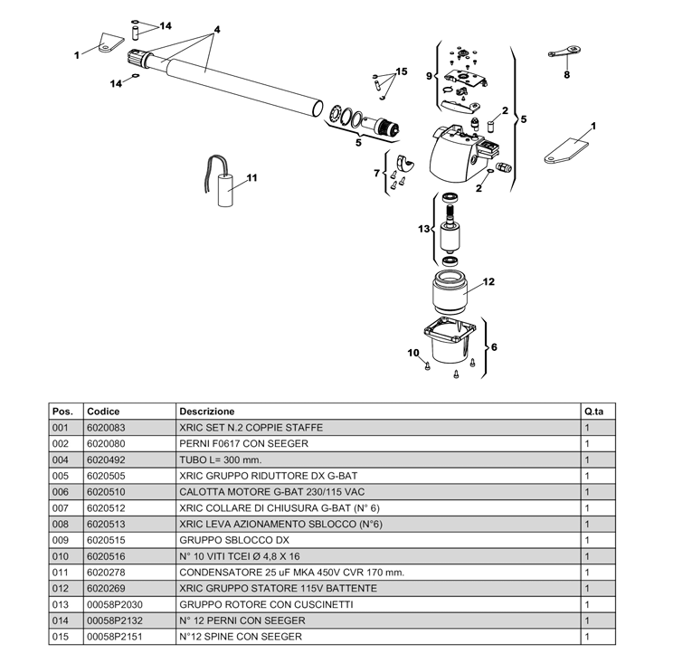

Mover números — Genius G-BAT 300
Editor interno para corregir los puntos del despiece derecho 115 VAC.
Uso: elija el número y toque su ubicación correcta en la imagen. Al terminar, presione Guardar y ver diagrama.

Editor interno para corregir los puntos del despiece derecho 115 VAC.
Uso: elija el número y toque su ubicación correcta en la imagen. Al terminar, presione Guardar y ver diagrama.
